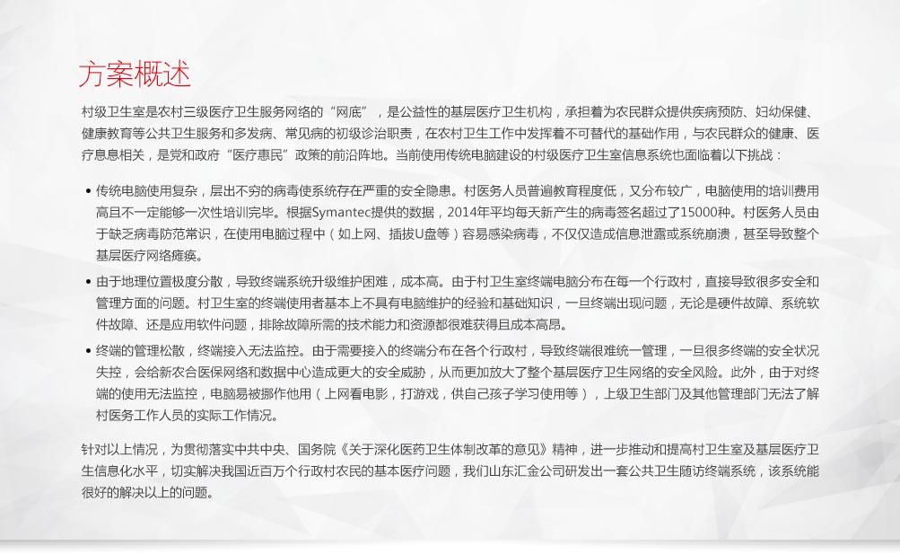

系统特点
-
(一) 兼容性强
- 通过中间转换程序，能兼容国家采集标准以及各省市采集标准。
- 数据传输接口目前采用FTP，正在开发使用Web Service方式。
-
(二) 配置灵活
- 可以根据不同的地区配置不同的数据传输格式，无需修改程序。
- 可以通过修改配置来匹配不同的平台录入接口。
-
(三) 扩展性强
- 采集数据类型可以自由扩展，无需修改应用框架。
- 数据存储采用统一标准。
-
(四) 权限灵活
- 可以根据客户要求，自由分配各种类型的采集权限。
-
(五) 数据准确
- 采用蓝牙接口的便携设备，数据自动输入终端，减少人为错误。
-
(六) 操作简单
- 使用人员无需学习培训即可掌握录入方法。
核心功能
(一) 系统管理
-
- 修改密码：修改个人密码。
- 医务人员管理：添加、删除、修改医务人员，重置医务人员密码。
-
- 机构管理：添加删除村镇。
- 系统升级：可以联网升级软件版本。
-
(二) 健康档案
- 通过扫描身份证，自动提取相关信息并建立档案。
-
(三) 健康体检
- 通过便携式电子医疗采集设备（电子血压计、便携血糖仪、数字体温计、便携血糖仪、便携式心电监护仪、脂肪测量仪、动态血压监护仪、胎音仪等）采集体检信息，并录入终端。

-
(四) 随访模块
- 婴幼儿随访：0-6岁的婴幼儿随访。
- 孕妇随访：产前0-9个月随访。
- 产妇随访：产后42天随访。
- 糖尿病随访：针对糖尿病人的随访记录。
- 高血压随访：针对糖尿病人的随访记录。
- 中医体质随访：针对糖尿病人的随访记录。
-
(五) 搜索模块
- 可以根据随访类型，身份证等条件搜索并查看终端上的随访记录。
(六) 上传模块
- 根据系统的FTP设置信息，自动上传当前采集的随访信息。
系统特点
(一) 节约成本
- 高效采集：采用便携设备现场采集健康数据。
- 动导入：采集数据后自动导入后台，不必每次手工录入系统，提高了效率，节约了人力成本。
(二) 数据准确
- 数据准确：数据录入时需要身份证元件，防止数据弄虚作假。
- 采集准确：使用蓝牙设备采集数据，避免人为填写错误。
- 地理信息：采集时会自动保存采集地理位置，为大数据分析提供更多相关性分析。

联想移动互联解决方案
联想移动互联解决方案以最终用户的体验为出发点，借助移动互联、大数据分析、云计算等创新技术，通过业务流程的再造，实现了企业资源的合理规划和高效运转。
联想在移动互联领域，通过梳理客户业务流程，整合行业专业应用软件，针对客户的行业特质以及业务需求进行深度定制，目前已储备超过200余项专业解决方案。更多解决方案以及产品、案例、咨询信息，请通过以下入口进入（ID:Lenovomia）：